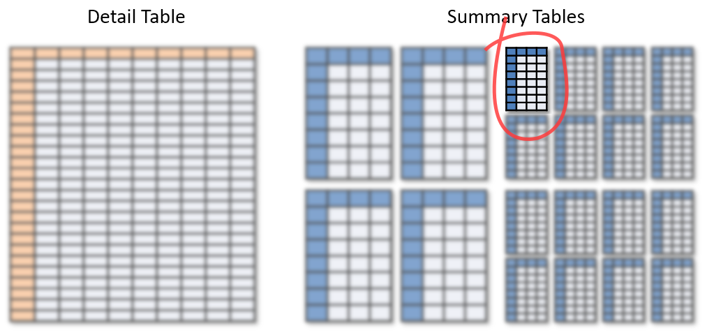
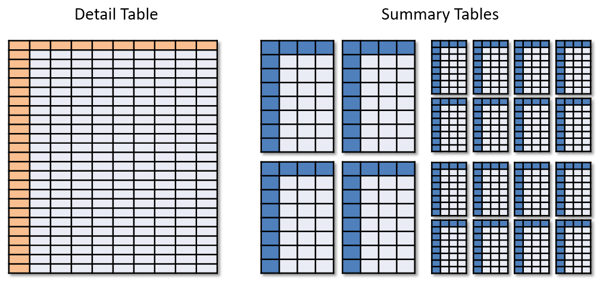

v0.1.0
James Clark
Dimensional Insight
business analytics and
integrated business intelligence solutions
Diver Platform
Supply Chain, Manufacturing,
Healthcare, Beverage Alcohol, ...
> spectre dive basic.cbase \
-q -d Direction -c Value
Direction Value
East 2,937.7687
North 2,520.4438
South 1,641.8041
West 2,924.6749
15+ years building business intelligence tools
author of DivePort
Spectre team lead
first poultry industry conference
james.clark@dimins.com
☑ Storage models:
row-oriented vs. column-oriented
☑ Database types:
MOLAP vs. in-memory ROLAP
(usually) two-dimensional
but must be stored on one-dimensional media
so a decision must be made...
| Title | Year | Gross |
|---|---|---|
| Alien 3 | 1992 | $55.5M |
| Iron Man 3 | 2013 | $499M |
| Toy Story 3 | 2010 | $415M |
Alien 31992$55.5MIron Man 32013 ...
| Title | Year | Gross |
|---|---|---|
| Alien 3 | 1992 | $55.5M |
| Iron Man 3 | 2013 | $499M |
| Toy Story 3 | 2010 | $415M |
Alien 3Iron Man 3Toy Story 319922013 ...
to answer a query: identify the right table, load it

MOLAP is fast at run-time
but inflexible
(cannot change summary functions at run-time
and must limit dimensions and depth)
and build times are long
Multidimensional OLAP
OLAP: online analytical processing
pre-computed query results
to answer a query: identify the right table, load it
MOLAP is fast at run-time
but inflexible
(cannot change summary functions at run-time
and must limit dimensions and depth)
and build times are long
Relational OLAP
OLAP: online analytical processing
no pre-computed results
just the detail table
queries are run directly against detail table
ROLAP is very flexible,
and was considered slow at run-time
but with modern hardware,
and enough memory
this is becoming a better option
MOLAP
in-memory ROLAP